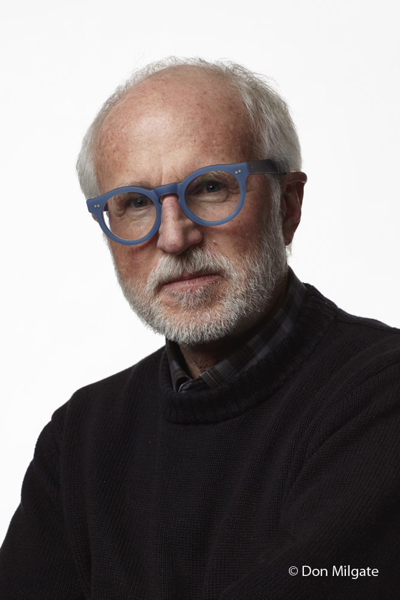

Photography has many styles and themes to pick from, so chose someone who you can base your work after and you can then branch off and make your own style
|  |  |
|
| This man helped me understand how to use DSLR camera and ajust all the setting just right, one could argue he started my love of photography |
I really like the style of his work and really hope to take photos like him some day. One of his best aspects is his use of light and monocoloristic photography | I like how this photographer takes photos in a way that really is not possible to see from the grond and thus allows people to gain a whole new perspective on the world |
I recommend finding someone who you want your work to be like so you don't get lost in the sea of photo styles